Guia do seminário
Guia do seminário
Guia do seminário
The Gymnastics Course
Manual do participante

Edição de 2026
© 2026 BirdBox Coaching Limited. Todos os direitos reservados.
Nenhuma parte deste manual pode ser copiada ou partilhada sem autorização por escrito.
BirdBox Coaching Limited · 19 Baggot Street Lower, Dublin 2, D02 X658, Ireland
birdboxcoaching.com
Capítulo 1
The Gymnastics Course é um seminário de desenvolvimento do coaching profissional. É dirigido e desenvolvido por uma equipa de treinadores especializados provenientes de várias partes do mundo, que têm como objetivo criar e alcançar o maior potencial possível de treinadores profissionais, proprietários de ginásios e atletas. Esperamos desempenhar um papel na sua capacidade de treinar melhor, para que possam crescer e aproximar-se cada vez mais dos seus objetivos de fitness. O nosso objetivo é aplicar a informação e metodologia da ginástica e do movimento do próprio corpo para melhorar o treino e o coaching, tal como temos feito ao longo destes últimos dez anos.

Este manual é um documento que acompanha tudo aquilo que irão descobrir ao participar no nosso seminário presencial. Foi concebido para iniciar, relembrar e facilitar a aprendizagem. Permite-lhes aprender de forma ativa enquanto participam no seminário. Por favor, tenham em atenção que este manual não contém toda a informação mencionada durante o fim de semana.
Suponhamos que gostariam de continuar a aprender com The Gymnastics Course de forma mais aprofundada, para complementar o que foi visto no seminário presencial. Se for esse o caso, podem estudar ao vosso próprio ritmo com o nosso curso online. Pode ser oferecido a todos aqueles que participaram no seminário presencial um desconto significativo, ajudando assim a construir uma experiência de aprendizagem mais profunda e completa. Este manual contém imagens, textos explicativos e informativos que acompanham os pontos-chave do seminário The Gymnastics Course. Haverá espaços reservados para que possam tomar os vossos próprios apontamentos ao longo do curso, ajudando assim a reter a informação da melhor forma possível.
Capítulo 2

Capítulo 3
Atleta – Um atleta é alguém capaz de competir e vencer outros no escalão de elite. Um critério seria competir ao mais alto nível do seu desporto, ou terminar no top 5 de uma prova nacional ou internacional.
Análise de necessidades – Processo formal e sistemático para identificar e avaliar o treino necessário para ajudar o atleta a melhorar no seu desporto, vida ou recuperação de lesões.
Regras – Baseadas em princípios, são normas sugeridas para corrigir e desenvolver o atleta em segurança. Podem ser adaptadas pelo treinador.
Leis – Normas rigorosas que devem ser cumpridas, baseadas em ciência. Não podem ser quebradas (ex: a lei da gravidade de Newton).
Virtuosismo – Em ginástica: “fazer o comum tão bem que se torna extraordinário” (Greg Glassman, 2005).
Mestria – “Melhoria da capacidade de um atleta usar eficazmente o seu potencial motor” (BirdBox Coaching, 2020).
Tecido muscular ativo – Tecido contraído que ajuda a manter posturas estáveis. Considerado “ativo” quando está em contração.
Hollow – Postura de estabilidade, com contração do core e alinhamento dos dedos dos pés às mãos. Inclui retroversão pélvica.
Strict (Estrito) – Movimento sem kip, baseado em controlo e força muscular.
Kip – Alteração rápida de direção com velocidade, provocando mudança no padrão ou plano de movimento.
Forma – Método para executar um movimento corretamente, visando a perfeição.
Aparelho estático – Estável e fixo (ex: chão, barras).
Aparelho dinâmico – Instável e em movimento (ex: argolas, corda).
Mobilidade – Movimento à volta de uma articulação.
Flexibilidade ativa – Alcance máximo de uma articulação sem ajuda externa, apenas com controlo muscular.
Flexibilidade passiva – Alcance máximo de uma articulação com ajuda externa (parceiro, aparelho, peso corporal, etc.).
ROM – Amplitude de movimento.
EROM – Amplitude de movimento em extensão.
Spotting – Assistência ao atleta durante uma progressão ou para prevenir lesões.
Tensão – Estado de estiramento e firmeza máximos. O oposto seria estar “laxo” ou “relaxado”. (Fowler & Crystal, 2010)

Capítulo 4
No curso de ginástica destacamos que o CrossFit é um programa de treino de força e de condicionamento físico. Por isso, ao trabalhar com um atleta ou cliente, devemos começar por fazer uma análise das suas necessidades. Compreender o que o atleta precisa – seja no desporto ou na sua vida diária – e desenhar um programa de treino baseado nas discrepâncias entre essas necessidades e os seus objetivos.
A ginástica é puro movimento do peso corporal. Ou seja, trata-se de como o corpo se move através do espaço. Na verdade, considera-se que, teoricamente, devemos dar prioridade à ginástica antes do condicionamento metabólico, uma vez que ela constitui a nossa base de movimento. Falamos de biomecânica. Se um indivíduo apresentar uma má biomecânica (movimento humano), a sua capacidade de alcançar um bom condicionamento metabólico será nula ou acabará por resultar em lesão.

Capítulo 5
Regra #1: Estático antes de Dinâmico
Regra #2: Strict antes de Kipping
A força é essencial para alcançar uma forma adequada, e uma forma adequada é essencial para a consciência e o controlo corporal.
A ginástica dá um claro ênfase aos movimentos com peso corporal. Mais do que tudo, um movimento estrito demonstra domínio sobre esse movimento — é por isso que promovemos o treino estrito antes de adicionar inércia. A força adquirida através do trabalho estrito compensa, pois reduz substancialmente o risco de lesões.
Pequenos passos trarão grandes recompensas. Evita pressas — os movimentos aprendem-se e conquistam-se.
Para demonstrar domínio em todos os movimentos, é necessário ter consciência e controlo corporal virtuoso. Para adquirir isso, é fundamental executar cada ação com a forma correta. Para atingir a forma correta, é preciso ter força suficiente para realizar a amplitude total do movimento, do início ao fim. A falta de força compromete a posição, o que faz com que as forças se distribuam de forma incorreta. Além disso, sem força, o movimento simplesmente não acontece.
O nosso objetivo é desenvolver o movimento de um atleta. Para isso, explicamos um processo que permitirá ao treinador encontrar a forma mais eficaz de o fazer. Para desenvolver um movimento, o treinador tem três ferramentas principais:
“A força é essencial para alcançar uma forma adequada, e a forma adequada é essencial para a consciência e o controlo corporal.”

Regra #3:
Constrói uma base isométrica
Regra #4:
Utiliza a carga Excêntrica como ferramenta para o desenvolvimento da força e das posições.
As contrações isométricas são aquelas em que o músculo mantém o mesmo comprimento enquanto está sob carga ou tensão. Treinar isometria é essencial para a estabilização articular e o desenvolvimento do tecido conjuntivo.
As contrações excêntricas são aquelas em que o músculo se alonga enquanto está sob carga ou tensão. Os benefícios das cargas excêntricas são muitos, especialmente quando falamos em alterações na estrutura muscular para o desenvolvimento da força.
As contrações concêntricas são aquelas em que o músculo se encurta enquanto está sob carga ou tensão. No treino, realizam-se muitas contrações concêntricas. Devemos considerar como queremos desenvolver a força dos nossos atletas e quais os riscos associados a cada tipo de contração. Esses riscos são explicados em detalhe na nossa palestra sobre programação.
Capítulo 6
As indicações (cues) são dirigidas diretamente ao atleta com o objetivo de provocar uma alteração posicional, recorrendo à comunicação verbal.
As restrições ou limitações são tarefas ou exercícios que não interferem com o comprimento ou força do músculo, mas que ajudam o indivíduo a esforçar-se mais para manter melhores formas e posições durante um movimento.
As intervenções são usadas quando as indicações e limitações não foram eficazes. Procuram provocar uma alteração no comprimento e na força do tecido muscular de forma a melhorar o movimento.
Durante o seminário presencial, abordamos diversos aspetos sobre indicações, intervenções e limitações. Abaixo, poderão ver uma ilustração que ajuda a decidir, de forma eficaz, se devem utilizar uma indicação, uma limitação ou uma intervenção.
Capítulo 7
Como atleta e/ou treinador, é crucial compreender as posições envolvidas nos movimentos. A seguir, apresentamos uma série de imagens que mostram as posições-chave para o desenvolvimento. Ao compreender e praticar estas posições fundamentais, poderão desenvolver as vossas competências, melhorar o desempenho e reduzir o risco de lesão.
Encorajamos-vos a adicionar notas às imagens durante o seminário e a integrar estas posições na vossa rotina diária de treino.


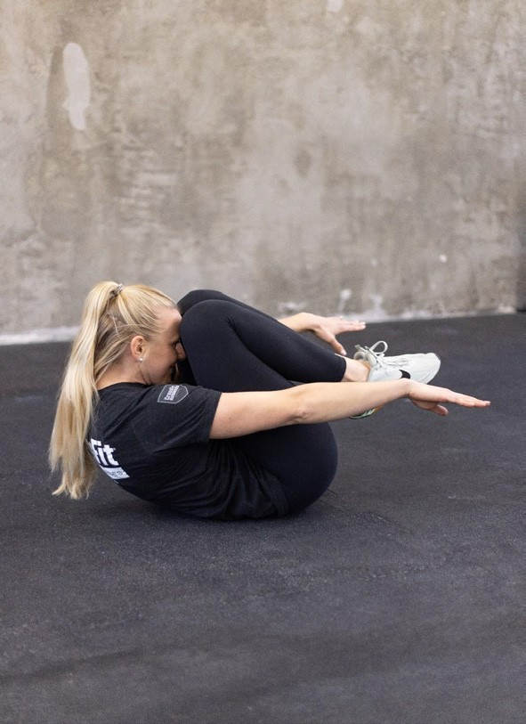


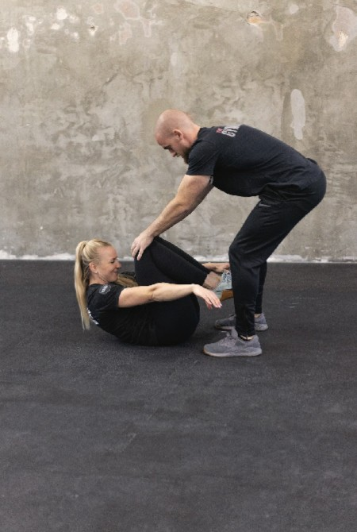


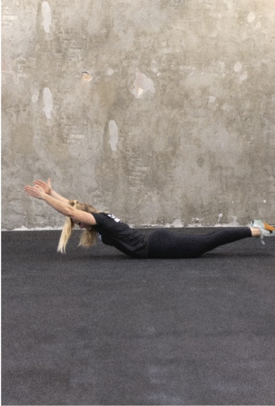


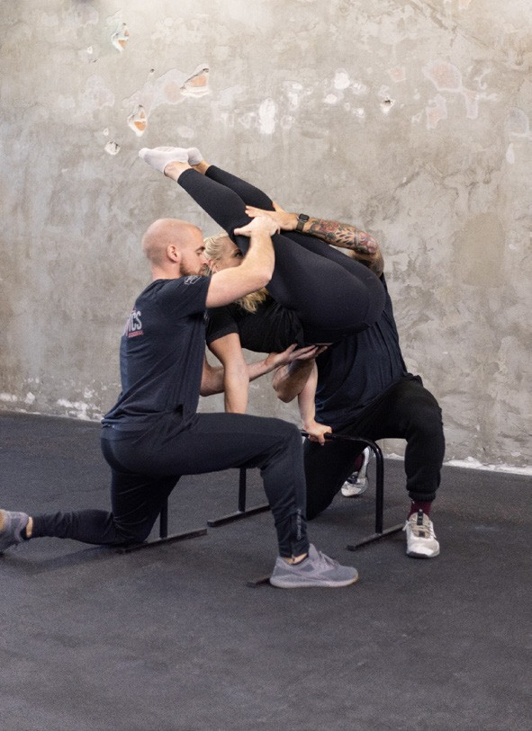


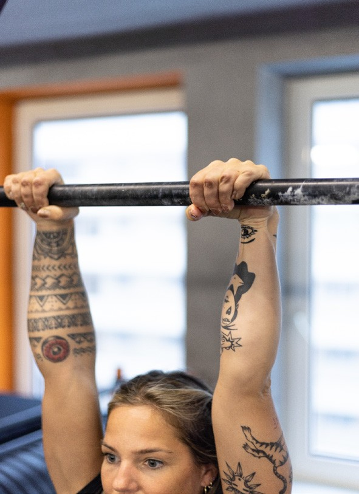


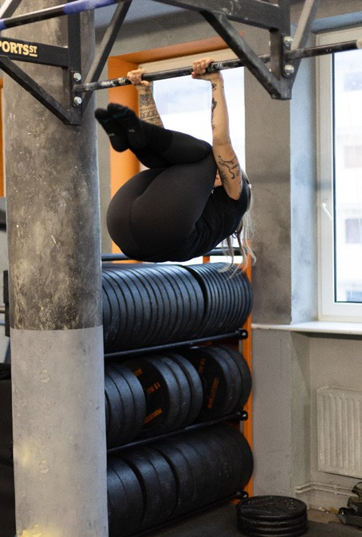


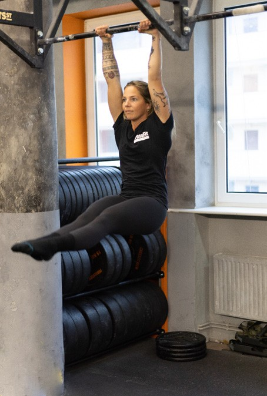

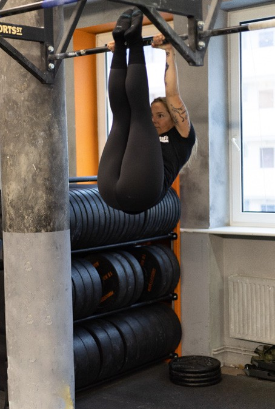


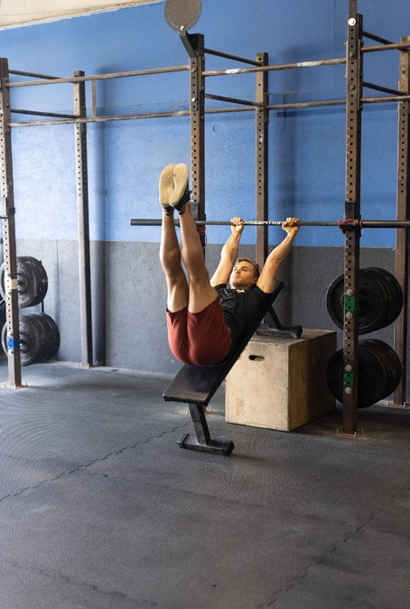

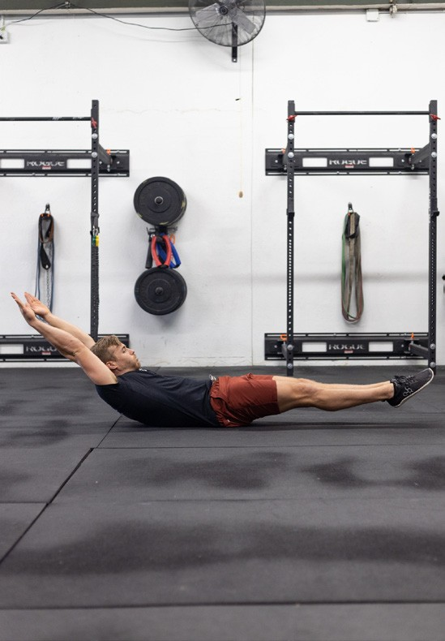


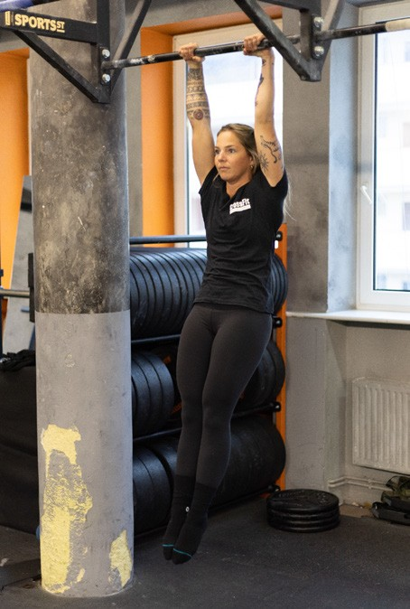

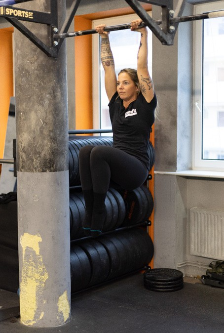
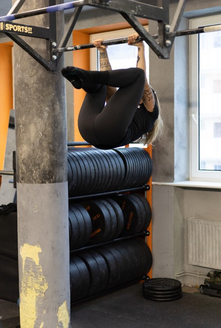

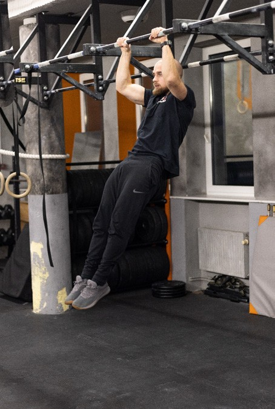


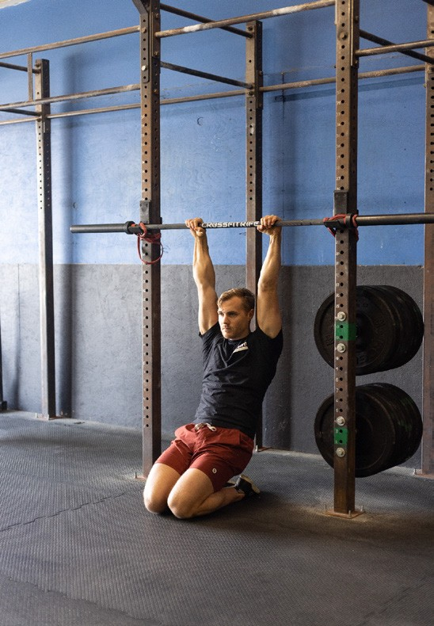
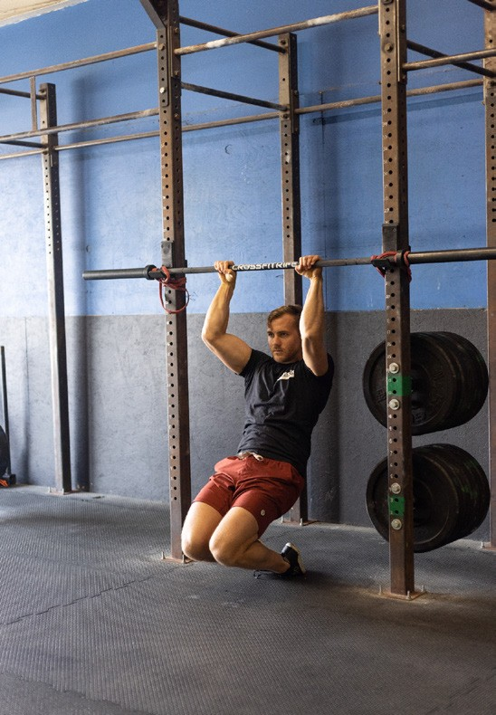


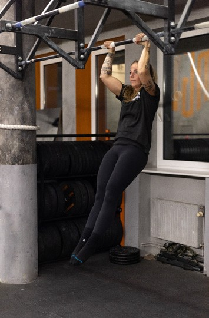
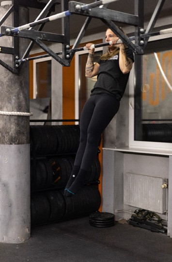

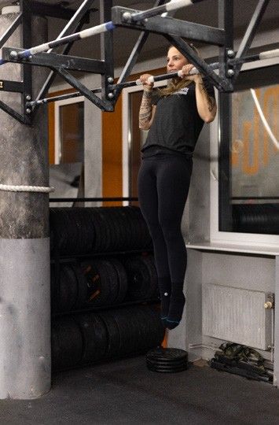
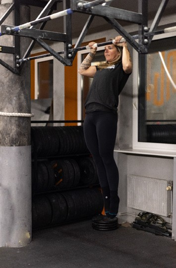


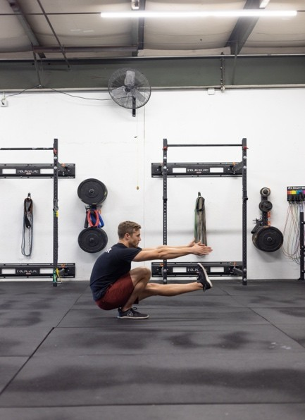


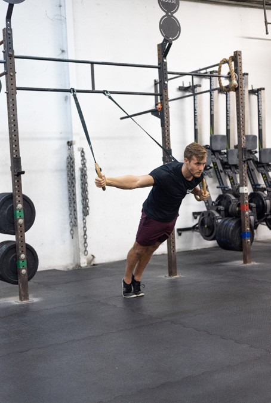
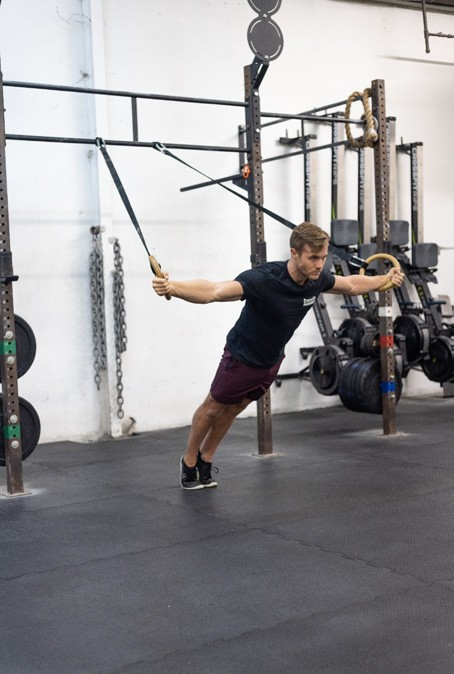


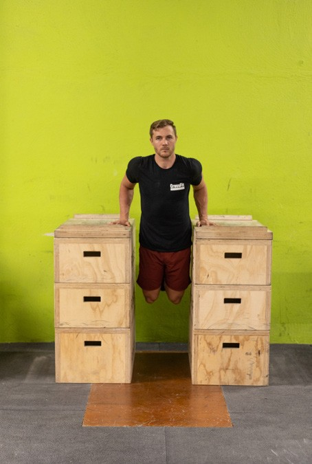

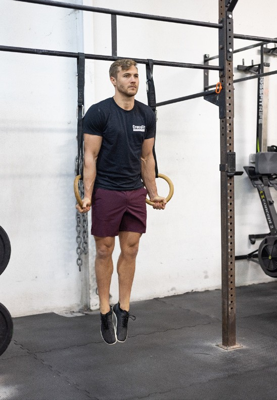


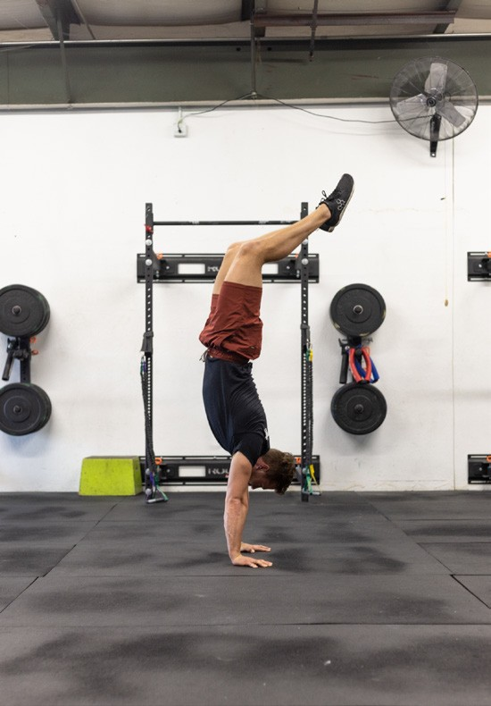

Capítulo 8
Durante a nossa conversa sobre programação, entraremos em mais detalhes. A seguir, partilhamos alguns elementos chave dessa discussão. Abrangemos muita informação importante e destacamos alguns aspetos chave.
A progressão linear é um método no qual se aumenta gradualmente a dificuldade ou o volume de um exercício ao longo do tempo para estimular a progressão e a adaptação do corpo. Este método é usado comumente nos treinos de força para ajudar os atletas a desenvolver a força e a resistência necessárias para realizar movimentos avançados ou levantamentos.
Ao utilizar uma progressão linear no treino, os atletas podem aumentar gradualmente a sua força e resistência de forma segura e eficaz. É importante salientar que a progressão linear deve ser realizada em conjunto com uma boa forma e técnica para evitar lesões e garantir os melhores resultados possíveis.
Gostamos de usar este método de progressão linear nas nossas programações de ginástica.
Muitas pessoas usam percentagens para os seus levantamentos, mas não para os movimentos gímnicos. Na ginástica, a intensidade é a % da repetição máxima (1 RM) ou do TUT (tempo sob tensão). O volume total é o total de repetições ou tempo sob tensão.
A seguir, encontrarão um exemplo de uma progressão linear para o desenvolvimento da strict pull-up. Verão que se carrega sempre a primeira série da sessão para poder criar uma sobrecarga progressiva. Gostamos de começar esta progressão com 40%. Este primeiro exemplo baseia-se numa série máxima de 10 strict pull-ups.
Exemplo de progressão linear com % de 1 RM:
| Semana | Sessão 1 | Sessão 2 | Sessão 3 |
|---|---|---|---|
| 1. | 4-4-4 | 5-4-4 | 5-5-4 |
| 2. | 5-5-5 | 6-5-5 | 6-6-5 |
| 3. | 6-6-6 | 7-6-6 | 7-7-6 |
| 4. | 7-7-7 | 8-7-7 | 8-8-7 |
| 5. | 8-8-8 | 9-8-8 | 9-9-8 |
| 6. | Retest / Repetição do teste | ||
*Começa este ciclo novamente com o teu novo número da série máxima.
Se não conseguires fazer uma strict pull-up, precisamos desenvolver força e vamos fazê-lo trabalhando o tempo sob tensão. Neste caso, começa com o exemplo da progressão abaixo. O primeiro número é para uma manutenção do queixo acima da barra (top hold) e o segundo número é para a fase excêntrica (controlo da descida). Salta até à posição para começar a tua série. Se não conseguires controlar e manter estas posições com o teu peso corporal completo, reduz a dificuldade usando um apoio com os dedos dos pés (Toe spotted).
Exemplo de progressão linear com TUT:
| Semana | Sessão 1 | Sessão 2 | Sessão 3 |
|---|---|---|---|
| 1. | 3/3 - 3/3 - 3/3 | 4/4 - 3/3 - 3/3 | 4/4 - 4/4 - 3/3 |
| 2. | 4/4 - 4/4 - 4/4 | 5/5 - 4/4 - 4/4 | 5/5 - 5/5 - 4/4 |
| 3. | 5/5 - 5/5 - 5/5 | 6/6 - 5/5 - 5/5 | 6/6 - 6/6 - 5/5 |
| Retest / Repetição do teste | Retesta a tua Strict pull-up. Se conseguires fazer uma, continua com a sessão 1 da semana 4. Se não conseguires, continua a aumentar os segundos no teu set. Se usaste apoio com os dedos nas primeiras três semanas, começa novamente a semana 1 usando o teu peso corporal completo. | ||
| 4. | 1-1-1 | 2-1-1 | 2-2-1 |
| 5. | 2-2-2 | 3-2-2 | 3-3-2 |
| 6. | 3-3-3 | 4-3-3 | 4-4-3 |
*Se conseguiste completar toda a progressão, podes agora começar de novo com o exemplo de %.
Podes aplicar esta progressão a qualquer movimento gímnico. Esta é uma abordagem muito simples e fácil de aplicar na tua programação. Talvez seja mesmo a melhor abordagem para a maior parte da tua base de atletas.
Se quiseres brincar com o volume, intensidade e frequência para programações individuais e quiseres entender isto mais a fundo, abaixo podes encontrar outro exemplo de progressão linear com mais variabilidade em volume, intensidade e frequência.
*O exemplo abaixo baseia-se numa série máxima de 10 strict pull-ups virtuosas
| Semana | Intensidade | Frequência | Volume |
|---|---|---|---|
| 1. | 3 séries a 40% 4-4-4 | 2 sessões/ semana | 24 reps |
| 2. | 3 séries a 40% 4-4-4 | 2 sessões/ semana | 24 reps |
| 3. | 3 séries a 50% 5-5-5 | 2 sessões/ semana | 30 reps |
| 4. | 3 séries a 50% 5-5-5 | 2 sessões/ semana | 30 reps |
| 5. | 4 séries a 40% 4-4-4-4 | 2 sessões/ semana | 32 reps |
| 6. | 4 séries a 40% 4-4-4-4 | 2 sessões/ semana | 32 reps |
| 7. | 3 séries a 40% 4-4-4 | 3 sessões/ semana | 36 reps |
| 8. | 3 séries a 40% 4-4-4 | 3 sessões/ semana | 36 reps |
Como podem ver, a intensidade, volume e frequência são os mesmos a cada duas semanas. Após as primeiras duas semanas, aumentámos a intensidade. Depois da terceira e quarta semana, reduzimos a intensidade nas semanas cinco e seis, mas aumentámos o volume. Nas semanas sete e oito, aumentámos a frequência. Ao ajustar o volume, a intensidade e a frequência, podem observar como esses números vão aumentando. Também podem aplicar isto a contrações isométricas ou a cargas excêntricas.
No exemplo, podem ver que o volume na ginástica é baixo. No levantamento de pesos, não se obtém sobrecarga com este volume. Na ginástica, ganhamos sobrecarga nas adaptações através do tempo sob tensão e do trabalho de ritmo (tempo), não pelo volume. Ocasionalmente, podemos usar um volume maior, mas o que realmente precisamos de usar é o tempo sob tensão e o ritmo.
Isto significa que, se fizermos a nossa série de 4-4-4 de strict pull-ups, vamos manter a posição de hollow durante 5 segundos, fazer a fase concêntrica durante 3 segundos, manter o queixo acima da barra durante 3 segundos, e fazer a fase excêntrica a descer durante 5 segundos para todas as 4 repetições.
Queremos treinar posições e perfeição, não volume e intensidade.